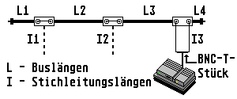
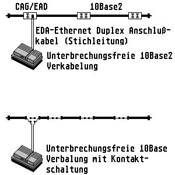

Previous
Next
TOC

Ist ein Gerät mit einer solchen Anschlußdose verbunden, führt eine 50
Ohm Koaxialleitung von der BNC-Buchse zum T-Stück an das Gerät und
eine zweite Leitung vom T-Stück zurück zur Anschlußdose. Wenn kein
Gerät angeschlossen ist, muß zwischen den beiden BNC-Buchsen der
Anschlußdose ein Überbrückungskabel gesteckt werden.
Zwei allgemeine Regeln sind zu beachten: Der Bus muß immer durchgän-
gig, das heißt an keinem Punkt geöffnet und an beiden Enden abge-
schlossen sein. Physikalisch gibt es bei lOBase2 keine Stichleitung,
die Abstände Dose - Endgerät gehören auch zur gesamten Buslänge und
müssen entsprechend berücksichtigt werden. In der oberen Abbildung
gilt: L1+L2+L3+L4+2(I1+I2+I3) < 185 m.
Die Vernetzung mit BNC-Dosen hat den Nachteil, daß bei Fehlen eines
Überbrückungskabels, oder wenn ein Endgerät nicht richtig angeschlos-
sen ist, die gesamte Kommunikation gestört wird.
Unterbrechungsfreie lOBase2 Verkabelung
Das Prinzip der unterprechungsfreien Verkabelung beruht auf dem vor-
handensein von Öffnerkontakten in den Dosen. Die elektrischen Signale
werden durch diese Kontakte auch dann weitergeleitet, wenn eine
Stichleitung fehlt oder gezogen wird. Die Abschlußwiderstände müssen
weiter vorhanden sein.

weiterblättern
Kapitel IEEE 802.3 (10Base2), Seite 2